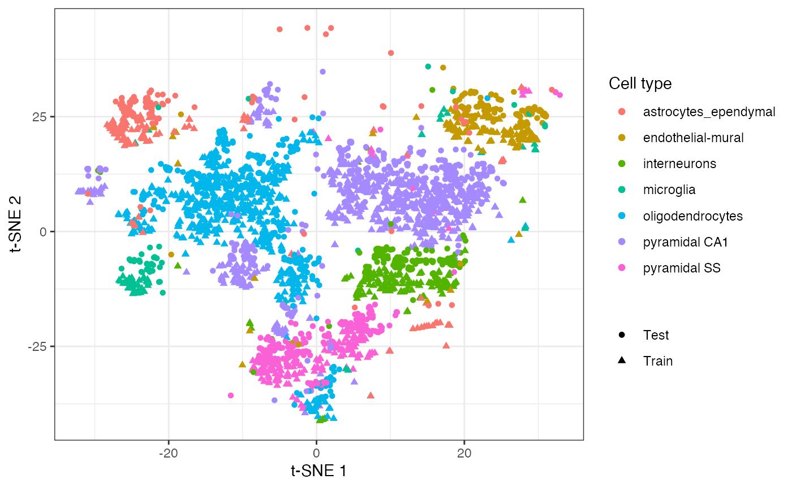

Introduction to snifter
Alan O’Callaghan
alan.ocallaghan@outlook.com Source:vignettes/snifter.Rmd
snifter.RmdIntroduction
snifter provides an R wrapper for the openTSNE implementation of fast interpolated t-SNE (FI-tSNE). It is based on basilisk and reticulate. This vignette aims to provide a brief overview of typical use when applied to scRNAseq data, but it does not provide a comprehensive guide to the available options in the package.
It is highly advisable to review the documentation in snifter and the openTSNE documentation to gain a full understanding of the available options.
Setting up the data
We will illustrate the use of snifter using data from scRNAseq and single cell utility functions provided by scuttle, scater and scran - first we load these libraries and set a random seed to ensure the t-SNE visualisation is reproducible (note: it is good practice to ensure that a t-SNE embedding is robust by running the algorithm multiple times).
library("snifter") library("scRNAseq") library("scran") library("scuttle") library("scater") library("ggplot2") theme_set(theme_bw()) set.seed(42)
Before running t-SNE, we first load data generated by Zeisel et al. from scRNAseq. We filter this data to remove genes expressed only in a small number of cells, estimate normalisation factors using scran and generate 20 principal components. We will use these principal components to generate the t-SNE embedding later.
data <- ZeiselBrainData() data <- data[rowMeans(counts(data) != 0) > 0.05, ] data <- computeSumFactors(data, cluster = quickCluster(data)) data <- logNormCounts(data) data <- runPCA(data, ncomponents = 20) ## Convert this to a factor to use as colouring variable later data$level1class <- factor(data$level1class)
Running t-SNE
The main functionality of the package lies in the fitsne function. This function returns a matrix of t-SNE co-ordinates. In this case, we pass in the 20 principal components computed based on the log-normalised counts. We colour points based on the discrete cell types identified by the authors.
mat <- reducedDim(data) fit <- fitsne(mat, random_state = 42L) ggplot() + aes(fit[, 1], fit[, 2], colour = data$level1class) + geom_point(pch = 19) + scale_colour_discrete(name = "Cell type") + labs(x = "t-SNE 1", y = "t-SNE 2")

Projecting new data into an existing embedding
The openTNSE package, and by extension snifter, also allows the embedding of new data into an existing t-SNE embedding. Here, we will split the data into “training” and “test” sets. Following this, we generate a t-SNE embedding using the training data, and project the test data into this embedding.
test_ind <- sample(nrow(mat), nrow(mat) / 2) train_ind <- setdiff(seq_len(nrow(mat)), test_ind) train_mat <- mat[train_ind, ] test_mat <- mat[test_ind, ] train_label <- data$level1class[train_ind] test_label <- data$level1class[test_ind] embedding <- fitsne(train_mat, random_state = 42L)
Once we have generated the embedding, we can now project the unseen test data into this t-SNE embedding.
new_coords <- project(embedding, new = test_mat, old = train_mat) ggplot() + geom_point( aes(embedding[, 1], embedding[, 2], colour = train_label, shape = "Train" ) ) + geom_point( aes(new_coords[, 1], new_coords[, 2], colour = test_label, shape = "Test" ) ) + scale_colour_discrete(name = "Cell type") + scale_shape_discrete(name = NULL) + labs(x = "t-SNE 1", y = "t-SNE 2")

Session information
sessionInfo() #> R version 4.0.2 (2020-06-22) #> Platform: x86_64-apple-darwin17.0 (64-bit) #> Running under: macOS Catalina 10.15.6 #> #> Matrix products: default #> BLAS: /Library/Frameworks/R.framework/Versions/4.0/Resources/lib/libRblas.dylib #> LAPACK: /Library/Frameworks/R.framework/Versions/4.0/Resources/lib/libRlapack.dylib #> #> locale: #> [1] en_US.UTF-8/en_US.UTF-8/en_US.UTF-8/C/en_US.UTF-8/en_US.UTF-8 #> #> attached base packages: #> [1] parallel stats graphics utils stats4 methods base #> #> other attached packages: #> [1] scater_1.17.5 ggplot2_3.3.2 #> [3] scuttle_0.99.15 scran_1.17.18 #> [5] scRNAseq_2.3.13 SingleCellExperiment_1.11.7 #> [7] SummarizedExperiment_1.19.8 Biobase_2.49.1 #> [9] GenomicRanges_1.41.6 GenomeInfoDb_1.25.11 #> [11] IRanges_2.23.10 S4Vectors_0.27.13 #> [13] BiocGenerics_0.35.4 MatrixGenerics_1.1.3 #> [15] matrixStats_0.57.0 snifter_0.99.2 #> [17] BiocStyle_2.17.1 #> #> loaded via a namespace (and not attached): #> [1] ggbeeswarm_0.6.0 colorspace_1.4-1 #> [3] ellipsis_0.3.1 rprojroot_1.3-2 #> [5] bluster_0.99.1 XVector_0.29.3 #> [7] BiocNeighbors_1.7.0 fs_1.5.0 #> [9] farver_2.0.3 bit64_4.0.5 #> [11] interactiveDisplayBase_1.27.5 AnnotationDbi_1.51.3 #> [13] knitr_1.30 jsonlite_1.7.1 #> [15] dbplyr_1.4.4 shiny_1.5.0 #> [17] BiocManager_1.30.10 compiler_4.0.2 #> [19] httr_1.4.2 dqrng_0.2.1 #> [21] basilisk_1.1.17 backports_1.1.10 #> [23] assertthat_0.2.1 Matrix_1.2-18 #> [25] fastmap_1.0.1 limma_3.45.14 #> [27] later_1.1.0.1 BiocSingular_1.5.1 #> [29] htmltools_0.5.0 tools_4.0.2 #> [31] rsvd_1.0.3 igraph_1.2.5 #> [33] gtable_0.3.0 glue_1.4.2 #> [35] GenomeInfoDbData_1.2.3 dplyr_1.0.2 #> [37] grDevices_4.0.2 rappdirs_0.3.1 #> [39] Rcpp_1.0.5 pkgdown_1.6.1 #> [41] vctrs_0.3.4 ExperimentHub_1.15.3 #> [43] DelayedMatrixStats_1.11.1 xfun_0.18 #> [45] stringr_1.4.0 beachmat_2.5.7 #> [47] mime_0.9 lifecycle_0.2.0 #> [49] irlba_2.3.3 statmod_1.4.34 #> [51] AnnotationHub_2.21.5 edgeR_3.31.4 #> [53] zlibbioc_1.35.0 scales_1.1.1 #> [55] basilisk.utils_1.1.11 ragg_0.3.1 #> [57] promises_1.1.1 yaml_2.2.1 #> [59] curl_4.3 gridExtra_2.3 #> [61] memoise_1.1.0 reticulate_1.16 #> [63] datasets_4.0.2 stringi_1.5.3 #> [65] RSQLite_2.2.1 BiocVersion_3.12.0 #> [67] desc_1.2.0 filelock_1.0.2 #> [69] BiocParallel_1.23.2 rlang_0.4.7 #> [71] pkgconfig_2.0.3 systemfonts_0.3.2 #> [73] bitops_1.0-6 evaluate_0.14 #> [75] lattice_0.20-41 purrr_0.3.4 #> [77] labeling_0.3 bit_4.0.4 #> [79] tidyselect_1.1.0 magrittr_1.5 #> [81] bookdown_0.20 R6_2.4.1 #> [83] generics_0.0.2 DelayedArray_0.15.12 #> [85] DBI_1.1.0 pillar_1.4.6 #> [87] withr_2.3.0 RCurl_1.98-1.2 #> [89] tibble_3.0.3 crayon_1.3.4 #> [91] BiocFileCache_1.13.1 rmarkdown_2.4 #> [93] viridis_0.5.1 locfit_1.5-9.4 #> [95] grid_4.0.2 blob_1.2.1 #> [97] digest_0.6.25 xtable_1.8-4 #> [99] httpuv_1.5.4 munsell_0.5.0 #> [101] viridisLite_0.3.0 beeswarm_0.2.3 #> [103] vipor_0.4.5